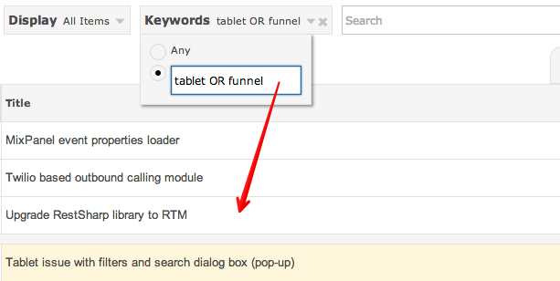
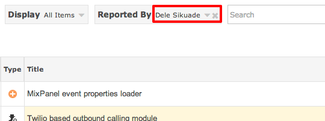
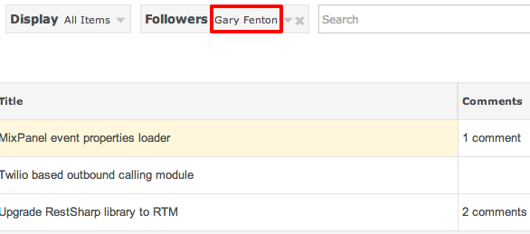

Use can use OR AND operators to find items that match your expression.

The following locations are searched for matching keywords:
You can find items that have been reported by a particular user - start typing and auto-complete will allow you to select matching users.

You can find items that are being followed by a particular user - start typing and auto-complete will allow you to select matching users.
